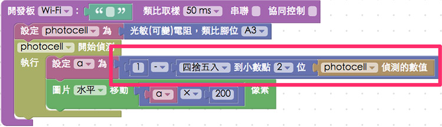

教學範例 34：可變電阻改變圖片位置
在「教學範例 17：光敏電阻獲取亮度數值」有介紹過光敏電阻的用法，而可變電阻的積木，也是同樣的使用方式，在這個範例當中，我們將使用可變電阻的旋鈕，透過旋轉旋鈕改變數值，就可以讓圖片的位置發生變化！
範例影片展示
接線與實作
可變電阻有三支接腳，左右分別接 3.3V 和 GND，記得使用電阻保護，避免當可變電阻過小的時候發生短路，中間的腳位為類比訊號腳，我們接在 A3 的位置。( 如果你的 3.3V 與 GND 顛倒，會發現出來的數值和旋轉的方向相反 )
馬克一號接線示意圖：

Fly 接線示意圖：

實際接線圖：


Webduino Blockly 操作解析
打開 Webduino Blockly 編輯工具 ( https://blockly.webduino.io )，把開發板放到編輯畫面裡，填入對應的 Webduino 開發板名稱，然後放入可變電阻的積木，設定為 A3 腳位。

放入開始偵測的積木，一開始我們先用一個變數 a 來裝載偵測到的數值，這裡對偵測到的數值做四捨五入到小數點兩位的計算，接著把這個數值 ( 0 ~ 1 ) 乘以 200，作為圖片水平移動的數值。( 為了讓圖片移動比較明顯所以乘以兩百，也因為乘以百位數所以一開始四捨五入到小數點兩位 )

確認開發板上線 ( 點選「檢查連線狀態」查詢 )，點選右上方紅色按鈕執行，轉動可變電阻旋鈕，就會看到圖片的位置發生變化了。
( 解答：http://blockly.webduino.io/#-KL_HHObSm1qXrX5vi1C )
如果你發現圖片移動的位置和你的旋轉方向不同，有兩個方法可以解決，第一個方法就是把 3.3v 和 GND 的電線對調，第二個方法可以從積木著手，因為可變電阻偵測到的數值是 0 ~ 1，要相反只要用 1 去減掉這個數值即可。

範例解析 ( 完整程式碼、檢查連線狀態 )
HTML 的 header 引入 webduino-all.min.js，目的在讓瀏覽器可以支援 WebComponents 以及 Webduino 所有的元件，如果是用 Blockly 編輯工具產生的程式碼，則要額外引入 webduino-blockly.js。
<script src="https://webduino.io/components/webduino-js/dist/webduino-all.min.js"></script>
<script src="https://webduinoio.github.io/webduino-blockly/webduino-blockly.js"></script>
HTML 的部分會放上一張圖片，如果要放自己的圖片就將網址放在 src 裡面。
<div id="demo-area-03-container">
<img src="http://blockly.webduino.io/media/webduino-logo.jpg" id="demo-area-03-image">
</div>
圖片位置會改變主要是因為我們的圖片 position 屬性是絕對的 ( absolute )，所以在這邊 CSS 要設定一下。
#demo-area-03-container {
position: relative;
width: 150px;
height: 150px;
}
#demo-area-03-image {
position: absolute;
top: 0;
left: 0;
width: 150px;
height: 150px;
transition: .3s;
-webkit-transition: .3s;
-moz-transition: .3s;
transform-origin: 75px 75px;
-webkit-transform-origin: 75px 75px;
-moz-transform-origin: 75px 75px;
}
JavaScript 基本上就是透過 on 來做接收，接收後會回傳 val 的數值。
var photocell;
var a;
boardReady('', function (board) {
board.systemReset();
board.samplingInterval = 50;
photocell = getPhotocell(board, 3);
photocell.on(function(val){
photocell.detectedVal = val;
a = (Math.round((photocell.detectedVal)*100))/100;
document.getElementById("demo-area-03-image").style.left = (a * 200)+"px";
});
});
以上就是透過可變電阻旋鈕，改變圖片位置。
完整程式碼：https://bin.webduino.io/fayu/edit?html,css,js,output
解答：http://blockly.webduino.io/#-KL_HHObSm1qXrX5vi1C
如果您還想了解更多，可以參考：
2. Blockly 教學：https://goo.gl/Y8sRkl
3. 產品總覽：https://webduino.io/buy.html
4. 露天賣場：http://goo.gl/0Dj9ip